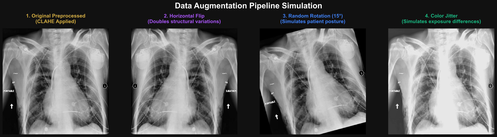

The Training Journey
1. Preparing the Data: Preprocessing & Augmentation 🥗
In medical imaging, raw data is often noisy, inconsistent, and low-contrast. Our data pipeline evolved through four phases to ensure the model focuses on pathological markers rather than imaging artifacts.
Data Preprocessing
The "Cleaning" phase. Standardizing raw scans for model consumption.
- CLAHE (Novel/Optimized Only): Contrast Limited Adaptive Histogram Equalization. Used to sharpen lung textures and bone boundaries.
- Normalization: Scaling pixel values based on ImageNet statistics (Mean: [0.485, 0.456, 0.406]) to stabilize training gradient.
- Resolution Upscaling: Moving from 224px (Standard) to 384px (Optimized) to capture micro-nodules.
Data Augmentation
The "Training" phase. Simulating clinical variations to increase robustness.
- Random Rotation (±10°): Simulates variations in how a patient aligns with the X-ray plate.
- Horizontal Flip: Doubles the dataset size and helps the model learn invariant features.
- Color Jitter: Randomly adjusts brightness and contrast to simulate different X-ray machine exposures.
Visualizing Our Augmentation Strategy

Pipeline Comparison Matrix
| Pipeline Stage | Preprocessing Strategy | Augmentation Level | Target Resolution |
|---|---|---|---|
| Phase 1: Baseline | Standard Normalization | None (Static) | 224 x 224 |
| Phase 2: Hybrid | CLAHE + Normalization | Light (Horizontal Flip) | 224 x 224 |
| Phase 3: High-Res | CLAHE + Normalization | Full (Rotate+Flip+Jitter) | 384 x 384 |
| Phase 4: Optimized | Advanced CLAHE + 🚀 Patient Split | Full (Aggressive Jitter) | 384 x 384 |
2. The Learning Rule & Loss Optimization 🎓
How does the AI actually "learn" from its mistakes?
Focal Loss vs. BCE 📉
Standard Binary Cross Entropy (BCE) treats all mistakes equally. However, our dataset is imbalanced (more healthy images than diseased). Our optimized pipeline uses Focal Loss, which "down-weights" easy examples and forces the AI to focus on rare, difficult cases like Hernia or Fibrosis.
AdamW Optimizer 🔧
Think of the Optimizer as a teacher. We use AdamW, which features decoupled weight decay. This prevents the model from "overfitting" (memorizing) specific images and helps it generalize to new, unseen X-rays.
3. Scientific Rigor: The "Failed" Experiments 🧪
In research, discovering what doesn't work is just as important as finding what does. After reaching a highly competitive 0.884 Macro AUC in Phase 4, we pushed the boundaries with two advanced techniques, which ultimately proved our Phase 4 architecture was incredibly robust.
Experiment 1: Asymmetric Loss
The Idea: Replace our standard loss function with a highly specialized Asymmetric Loss designed to heavily penalize misses on rare diseases (like Hernia).
Why it failed: While it slightly improved detection on extremely complex diseases, it sacrificed performance on common ones (generalist vs. specialist trade-off), bringing the average AUC down to 0.853.
Experiment 2: Self-Supervised Learning (SimCLR)
The Idea: Train the AI on X-rays without any disease labels first, forcing it to just "understand" lung structure by comparing highly augmented cropped versions of the same scan.
Why it failed: SimCLR-style contrastive learning requires massive batch sizes (512+) and huge epochs (100+) to converge effectively. On local research hardware, the standard supervised approach drastically outperformed it.